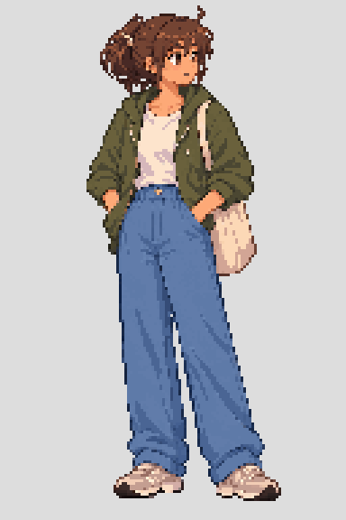

<!doctype html><meta charset="utf-8"><title>Independent original timings</title>
<style>body{font:16px system-ui;background:#ddd;display:flex;gap:24px;padding:20px}figure{margin:0}img{image-rendering:pixelated}figcaption{margin-bottom:12px}</style>
<figure><figcaption>Previous coordinated prototype — 2.53 s</figcaption></figure>
<figure><figcaption>Authored redrawn candidate — 3.95 s</figcaption></figure>
